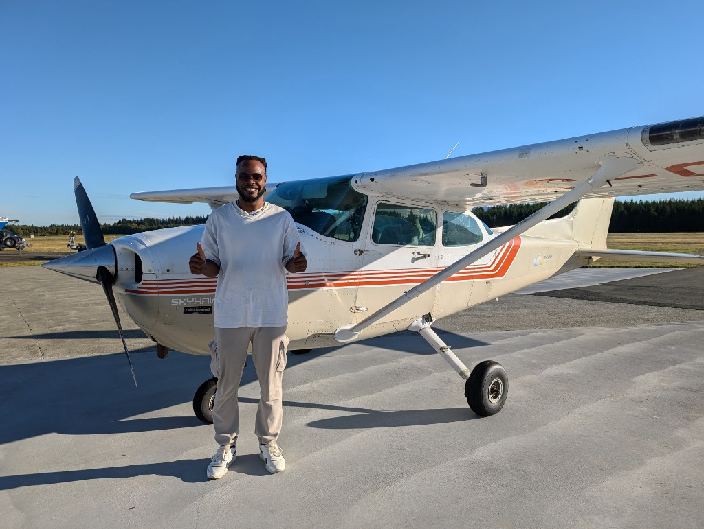
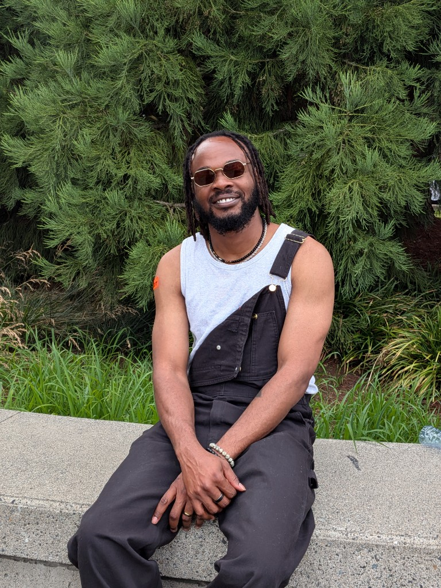
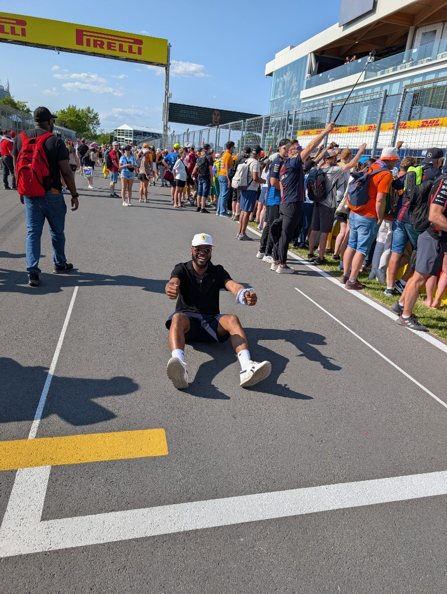

About
Platform engineer. Now: agents infrastructure. Before: multi-tenant PaaS, payments, AWS.

01 / Work
I am a senior software engineer. For the last while I have been building the platform an organisation deploys its AI agents on: the infrastructure modules, the shipping stack (CI, prompt promotion, evals, tracing), and the guardrails that ship in the template so authors do not have to remember them.
Before agents, I spent several years on a developer platform for a multi-tenant product: storage isolation so partner brands could run on shared infrastructure, a live payments migration with no safe failure mode, a pricing service that had to be the only writer, and a typed design system that survived a rebrand. I led the technical designs and small teams for a few of those launches, and I release-managed more repositories than I would like to count.
I like the layer between “an engineer had an idea” and “it is running for other teams.” That is where most of my work sits.
02 / How I work
- Reversible first steps. An interim architecture with a stated migration path beats an end-state build I cannot yet justify.
- Divergence is not a defect. In review I keep a register of conscious calls separate from bugs, and I verify high-severity findings in the source myself.
- Enablement over gatekeeping. The best control is the one that lets you say yes.
- Honest about noise. If a win is within run-to-run variance, I say so and quote the larger-sample number.
- Leave the map better than you found it. Cold takeovers and on-call get written up for the next person.
03 / Outside work

I am a student pilot working toward a private licence. Flying rewards the same habits as platform work: checklists, honest debriefs, and not trusting a single instrument.
I make lo-fi music. There is an album on the usual streaming services; it is on the home page because I am proud of it and slightly embarrassed, in equal measure.

I tinker with Arduino and small electronics, mostly sensors for the garden, which is a polite way of saying I have automated the tomatoes and they still do what they want.
I watch a lot of soccer and Formula 1, and I have opinions about the midfield. Occasionally I go to a rave with friends and come back with fewer opinions.

I am a bit private online. This site has what I want to share; the rest is for people who ask over coffee.
04 / Elsewhere
Email is best: hello@nnajiabraham.com. Otherwise GitHub, LinkedIn, Medium, and Twitter.